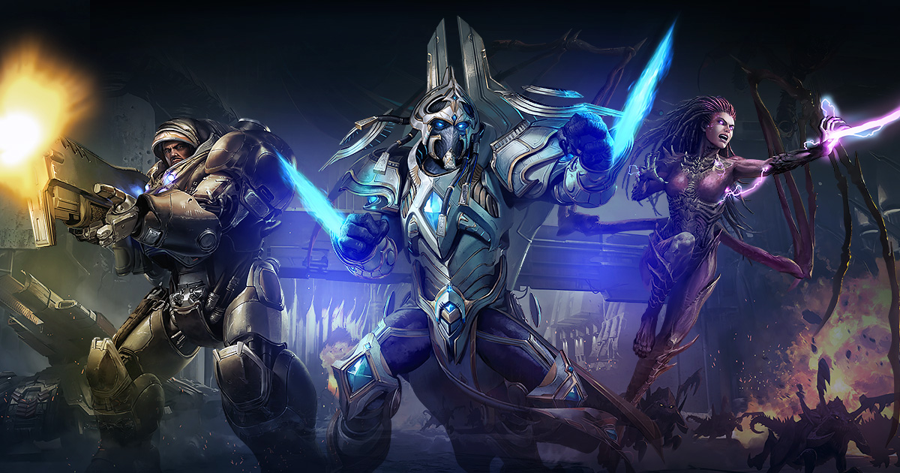

is a real-time strategy game set in an immersive world of intergalactic science fiction.

It has many different game modes, among which include the engaging campaign, with multiple storylines revolving around each of the game's three unique races.